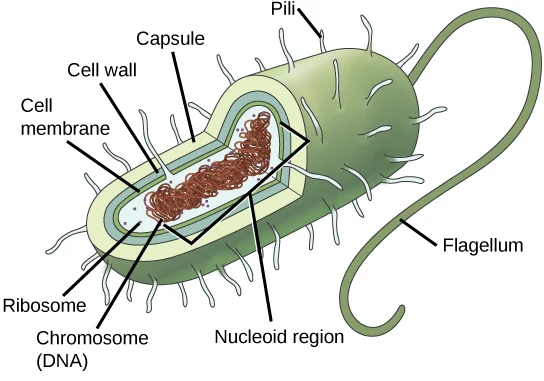

Microorganisms and Disease
TEAS objective S.2.5 · Biology
What the TEAS expects: you can compare the main kinds of disease-causing microorganisms (bacteria, viruses, fungi, protozoa and parasitic worms), name example diseases, and explain why each kind needs a different treatment.
1. The main kinds of pathogens
A pathogen is anything that causes disease.
Swipe the table sideways to see every column. →
| Type | What it is | Example diseases | Treated with |
|---|---|---|---|
| Bacteria | Single-celled prokaryotes: no nucleus, have a cell wall and their own ribosomes | Strep throat, tuberculosis, urinary tract infections, Salmonella food poisoning | Antibiotics |
| Viruses | Not cells: DNA or RNA inside a protein coat (capsid); reproduce only inside a host cell | Common cold, flu, measles, HIV, COVID-19 | Antivirals for some; vaccines prevent many. Antibiotics do not work |
| Fungi | Eukaryotes (yeasts and molds) with cell walls of chitin | Athlete's foot, ringworm, yeast (Candida) infections | Antifungals |
| Protozoa | Single-celled eukaryotes | Malaria (spread by mosquitoes), Giardia | Antiparasitic drugs |
| Helminths | Parasitic worms (multicellular) | Tapeworm, hookworm, pinworm | Antiparasitic drugs |
Size order: viruses are much smaller than bacteria; bacteria are much smaller than human cells.
Check 1: A patient has a viral infection and asks for antibiotics. Why won't antibiotics help? Answer at the bottom of the page.
2. A closer look at bacteria

Tap or click the figure to open it full size.
- Antibiotics work by attacking structures and processes bacteria have and human cells don't, such as the bacterial cell wall and bacterial ribosomes.
- Shapes: cocci (spheres), bacilli (rods), spirilla (spirals). Strepto- means chains; staphylo- means clusters.
- Many bacteria are helpful: gut bacteria help digest food and make vitamin K, and "good" bacteria crowd out harmful ones.
- Antibiotic resistance: when antibiotics are overused, used when they aren't needed (for example, for viral infections) or not taken as prescribed, bacteria that are less affected by the drug survive and multiply. This is natural selection in action. Patients should take antibiotics exactly as prescribed.
3. A closer look at viruses
A virus attaches to a specific host cell and gets its genetic material inside (some inject only their DNA or RNA; most viruses that infect humans enter the cell whole). It then hijacks the cell's ribosomes and enzymes to make new viruses. The new viruses leave the cell, often destroying it.
Because viruses use the host's own machinery, few drugs can stop them without harming the host's cells. That is why prevention by vaccines matters so much for viral disease.
4. How disease spreads
- Direct contact: touching, kissing, sexual contact.
- Droplet / airborne: coughs and sneezes (flu, tuberculosis).
- Contaminated food and water: Salmonella, E. coli, Giardia.
- Vectors: an animal carries the pathogen between hosts. Mosquitoes carry malaria; ticks carry Lyme disease.
- Fomites: contaminated objects such as doorknobs or needles.
Handwashing is the single most effective way to stop the spread of many infections.
Check 2: Malaria is caused by which type of microorganism, and how does it spread? Answer at the bottom of the page.
Common traps
- Calling viruses cells or bacteria. Viruses are not cells and have no ribosomes.
- Using antibiotics for colds or flu. They target bacteria only.
- Assuming all microbes are harmful. Many bacteria are essential to health.
- Calling malaria a virus. It is a protozoan, spread by mosquitoes.
- Calling ringworm a worm. It is a fungal skin infection.
Learn it properly
- Bacteria and how they cause disease: OpenStax Concepts of Biology, Section 13.1 Prokaryotic Diversity: OpenStax (opens in a new tab)
- Protists (including malaria): Section 13.3 Protists: OpenStax (opens in a new tab)
- Fungi: Section 13.4 Fungi: OpenStax (opens in a new tab)
- Viruses: OpenStax Biology 2e, Section 21.1 Viral Evolution, Morphology, and Classification: OpenStax (opens in a new tab) and Section 21.2 Virus Infections and Hosts: OpenStax (opens in a new tab)
Check answers
- Antibiotics target bacterial structures such as cell walls and bacterial ribosomes. Viruses don't have these, so antibiotics have nothing to act on.
- A protozoan (Plasmodium), spread by the bite of infected mosquitoes (a vector).
ESCC TEAS Prep · Original study material written for Eastern Shore Community College. Figures from OpenStax, Concepts of Biology, licensed CC BY 4.0.